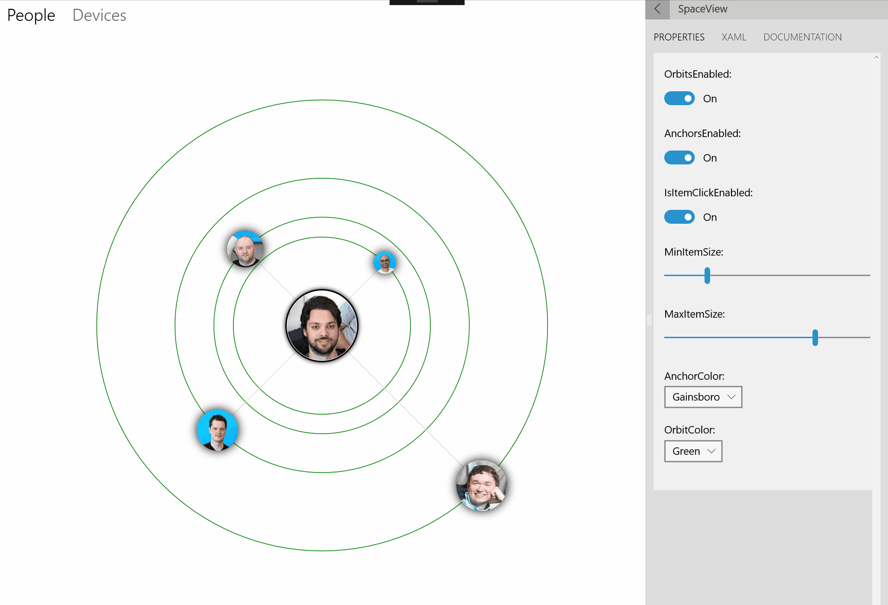

OrbitView (Archived)
Warning
This document has been archived and the component is not available in the current version of the Windows Community Toolkit.
While there are no immediate plans to port this component to 8.x, the community is welcome to express interest or contribute to its inclusion.
For more information:
https://github.com/CommunityToolkit/Windows/issues/90
- GitHub tracking issue for OrbitView port
- Community Toolkit GitHub repository
- Documentation feedback and suggestions
Original documentation follows below.
The OrbitView control provides a new control, inherited from the ItemsControl. All items are arranged in circle around a center element
OrbitViewDataItem is a helper class used for specifying size and distance of each item of the OrbitView. To work properly, the ItemSource of the OrbitView should be set to en IEnumerable<OrbitViewDataItem>. Objects extending OrbitViewDataItem will also work. Alternatively, OrbitViewDataItem has the Item object property that can be used to store additional objects and properties.
Syntax
<Page ...
xmlns:controls="using:Microsoft.Toolkit.Uwp.UI.Controls"/>
<controls:OrbitView OrbitsEnabled="True" AnchorsEnabled="False"
IsItemClickEnabled="True" MinItemSize="20"
MaxItemSize="60" AnchorColor="Gray" OrbitColor="Gray">
<controls:OrbitView.ItemTemplate>
<DataTemplate>
<controls:DropShadowPanel/>
</DataTemplate>
</controls:OrbitView.ItemTemplate>
<controls:OrbitView.ItemsSource>
<controls:OrbitViewDataItemCollection>
<controls:OrbitViewDataItem />
</controls:OrbitViewDataItemCollection>
</controls:OrbitView.ItemsSource>
<controls:OrbitView.CenterContent>
<Grid>
<!-- OrbitView Center Content -->
</Grid>
</controls:OrbitView.CenterContent>
</controls:OrbitView>
Sample Output

Properties
OrbitView Properties
| Property | Type | Description |
|---|---|---|
| AnchorColor | Brush | Gets or sets a value indicating the color of anchors |
| AnchorsEnabled | bool | Gets or sets a value indicating whether anchors are enabled |
| AnchorThickness | double | Gets or sets a value indicating the thickness of the anchors |
| CenterContent | object | Gets or sets a value representing the center element |
| IsItemClickEnabled | bool | Gets or sets a value indicating whether elements are clickable |
| MaxItemSize | double | Gets or sets a value indicating the maximum size of items |
| MinItemSize | double | Gets or sets a value indicating the minimum size of items Note: for this property to work, Data Context must be derived from OrbitViewItems and Diameter must be between 0 and 1 |
| OrbitColor | Brush | Gets or sets a value indicating the color of orbits |
| OrbitDashArray | DoubleCollection | Gets or sets a value indicating the dash array for the orbit |
| OrbitsEnabled | bool | Gets or sets a value indicating whether orbits are enabled or not |
| OrbitThickness | double | Gets or sets a value indicating the thickness of the orbits |
Important
For MaxItemSize and MinItemSize property to work, Data Context must be derived from OrbitViewItems and Diameter must be between 0 and 1
OrbitViewDataItem Properties
| Property | Type | Description |
|---|---|---|
| Diameter | double | Gets or sets a value indicating the diameter of the item. Expected value betweeen 0 and 1 |
| Distance | double | Gets or sets a value indicating the distance from the center. Expected value betweeen 0 and 1 |
| Image | ImageSource | Gets or sets a value indicating the image of the item |
| Item | object | Gets or sets a value of an object that can be used to store model data |
| Label | string | Gets or sets a value indicating the name of the item. Used for AutomationProperties |
Events
OrbitView Events
| Events | Description |
|---|---|
| ItemClick | Raised when an item has been clicked or activated with keyboard/controller |
Important
IsItemClickedEnabled should be true for this event to work
Examples
The following sample demonstrates how to add OrbitView Control.
<controls:OrbitView OrbitsEnabled="True" AnchorsEnabled="False"
IsItemClickEnabled="True" MinItemSize="20"
MaxItemSize="60" AnchorColor="Gray" OrbitColor="Gray">
<controls:OrbitView.ItemTemplate>
<DataTemplate x:DataType="controls:OrbitViewDataItem">
<controls:DropShadowPanel Color="Black" BlurRadius="20" VerticalContentAlignment="Stretch" HorizontalContentAlignment="Stretch">
<Ellipse >
<Ellipse.Fill>
<ImageBrush ImageSource="{x:Bind Image}"></ImageBrush>
</Ellipse.Fill>
</Ellipse>
</controls:DropShadowPanel>
</DataTemplate>
</controls:OrbitView.ItemTemplate>
<controls:OrbitView.ItemsSource>
<controls:OrbitViewDataItemCollection>
<controls:OrbitViewDataItem Image="ms-appx:///Assets/People/shen.png" Distance="0.1" Label="Shen" Diameter="0.2"></controls:OrbitViewDataItem>
<controls:OrbitViewDataItem Image="ms-appx:///Assets/People/david.png" Distance="0.2" Label="David" Diameter="0.5"></controls:OrbitViewDataItem>
<controls:OrbitViewDataItem Image="ms-appx:///Assets/People/petri.png" Distance="0.4" Label="Petri" Diameter="0.6"></controls:OrbitViewDataItem>
<controls:OrbitViewDataItem Image="ms-appx:///Assets/People/vlad.png" Distance="0.8" Label="Vlad" Diameter="0.8"></controls:OrbitViewDataItem>
</controls:OrbitViewDataItemCollection>
</controls:OrbitView.ItemsSource>
<controls:OrbitView.CenterContent>
<Grid>
<controls:DropShadowPanel>
<Ellipse Fill="White" Height="105" Width="105" Stroke="Black" StrokeThickness="2"></Ellipse>
</controls:DropShadowPanel>
<Ellipse Height="100" Width="100" VerticalAlignment="Center" HorizontalAlignment="Center">
<Ellipse.Fill>
<ImageBrush ImageSource="ms-appx:///Assets/People/nikola.png"></ImageBrush>
</Ellipse.Fill>
</Ellipse>
</Grid>
</controls:OrbitView.CenterContent>
</controls:OrbitView>
Sample Project
Carousel Sample Page Source.You can see this in action in the Windows Community Toolkit Sample App.
Default Template
OrbitView XAML File is the XAML template used in the toolkit for the default styling.
Requirements
| Device family | Universal, 10.0.16299.0 or higher |
|---|---|
| Namespace | Microsoft.Toolkit.Uwp.UI.Controls |
| NuGet package | Microsoft.Toolkit.Uwp.UI.Controls |